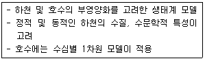
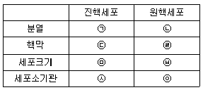
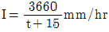
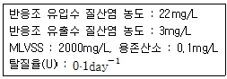
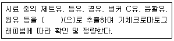
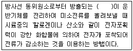
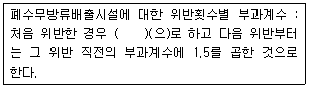

1과목: 수질오염개론
1. 3g의 아세트산(CH3COOH)을 증류수에 녹여 1L로 하였다. 이 용액의 수소이온 농도는? (단, 이온화 상수값은 1.75×10-5이다.)
2. 성층현상에 관한 설명으로 틀린 것은?
3. 아래와 같은 특징을 나타내는 하천 모델은?

4. 25℃, 2atm의 압력에 있는 메탄가스 5.0kg을 저장하는데 필요한 탱크의 부피는? (단, 이상기체의 법칙 적용, R = 0.082 Lㆍatm/molㆍK)
5. 하수가 유입된 하천의 자정작용을 하천 유하거리에 따라 분해지대, 활발한 분해지대, 회복지대, 정수지대의 4단계로 분류하여 나타내는 경우, 회복지대의 특성으로 틀린 것은?
6. 크기가 2000m3인 탱크 내 염소이온 농도가 250mg/L이다. 탱크내의 물은 완전혼합이며, 염소이온이 없는 물이 20m3/hr로 연속적으로 유입되어 염소이온 농도가 2.5mg/L로 낮아질 때까지의 소요시간(hr)은?
7. 금속을 통해 흐르는 전류의 특성으로 틀린 것은?
8. 하천의 탈산소계수를 조사한 결과 20℃에서 0.19/day 이었다. 하천수의 온도가 25℃로 증가되었다면 탈산소계수는? (단, 온도보정계수는 1.047이다.)
9. 시료의 BOD5가 200mg/L이고 탈산소계수값이 0.15/day(밑수는 10)일 때 최종 BOD는?
10. 수은주 높이 150mm는 수주로 몇 mm인가?
11. 글루코스(C6H12O6) 300g을 35℃ 혐기성 소화조에서 완전분해시킬 때 발생 가능한 메탄가스의 양은? (단, 메탄가스는 1기압, 35℃로 발생된다고 가정함)
12. 하천의 5일 BOD가 300mg/L이고 최종 BOD가 500mg/L이다. 이 하천의 탈산소계수(상용대수)는?
13. 균류(Fungi)의 경험적 화학 조성식으로 옳은 것은?
14. 콜로이드의 침전에 미치는 영향이 입자에 반대되는 전하를 가진 첨가된 전해질 이온이 지니고 있는 전하의 수에 따라 현저하게 증가한다는 법칙은?
15. Mg(OH)2 290mg/L 용액의 pH는?
16. 원핵세포와 진핵세포를 비교한 내용으로 틀린 것은?

17. 소수성 콜로이드의 특성으로 틀린 것은?
18. BOD5가 270mg/L이고, COD가 450mg/L인 경우, 탈산소계수(K1)의 값이 0.1/day 일 때, 생물학적으로 분해 불가능한 COD는? (단, BDCOD = BODu 상용대수 기준)
19. Bacteria(C5H7O2N)의 호기성 산화과정에서 박테리아 50g 당 소요되는 이론적 산소요구량은? (단, 박테리아는 CO2, H2O, NH3 로 전환됨)
20. 유량이 50000m3/day인 폐수를 하천에 방류하였다. 폐수방류 전 하천의 BOD는 4mg/L이며, 유량은 4000000m3/day 이다. 방류한 폐수가 하천수와 완전 혼합되었을 때 하천의 BOD가 1mg/L 높아진다고 하면, 하천에 가해지는 폐수의 BOD 부하량은? (단, 폐수가 유입된 이후에 생물학적 분해로 인한 하천의 BOD량 변화는 고려하지 않음)
2과목: 상하수도계획
21. 상수관(금속관)의 부식은 자연부식과 전식으로 나누어진다. 다음 중 전식에 해당되는 것은?
22. 수평으로 부설한 직경 300mm, 길이 3000m의 주철관에 8640m3/day로 송수시 관로 끝에서의 손실수두는? (단, 마찰계수 f = 0.03, g = 9.8m/sec2)
23. 호소, 댐을 수원으로 하는 경우의 취수시설인 취수틀에 관한 설명으로 틀린 것은?
24. 상수처리를 위한 약품침전지의 구성과 구조로 틀린 것은?
25. 1분당 300m3의 물을 150m 양정(전양정)할 대 최고효율점에 달하는 펌프가 있다. 이 대의 회전수가 1500rpm이라면 이 펌프의 비속도(비교회전도)는?
26. 집수정에서 가정까지의 급수계동을 순서적으로 나열한 것으로 옳은 것은?
27. 소규모 하수도 계획시 고려하여야 하는 소규모 지역 고유의 특성이 아닌 것은?
28. 응집시설 중 완속교반시설에 관한 설명으로 틀린 것은?
29.

, 면적 2.0km2, 유입시간 6분, 유출계수 C = 0.65, 관내유속이 1m/sec인 경우, 관길이 600m인 하수관에서 흘러나오는 우수량은? (단, 합리식 적용)30. 지하수의 취수지점 선정에 관련한 설명 중 틀린 것은?
31. 원심력 펌프의 규정회전수는 2회/sec, 규정토출량이 32m3/min, 규정양정(H)이 8m이다. 이때 이 펌프의 비교 회전도는?
32. 상수처리시설인 ‘착수정’에 관한 설명으로 틀린 것은?
33. 정수처리방법인 중간염소처리에서 염소의 주입 지점으로 가장 적절한 것은?
34. 집수매거에 관한 설명 중 틀린 것은?
35. 직경 2m인 하수관을 매설하려고 한다. 성토에 의하여 관에 가해지는 하중을 Marston의 방법에 의해 계산하면? (단, 흙의 단위중량 1.9kN/m3, C1=1.86, 관의 상부 90° 부분에서의 관매설을 위해 굴토한 도랑의 폭 = 3.3m)
36. 오수배제계획시 계획오수량, 오수관거계획에 관하여 고려할 사항으로 틀린 것은?
37. 정수시설인 급속여과지 시설기준에 관한 설명으로 틀린 것은?
38. 상수관로에서 조도계수 0.014, 동수경사 1/100이고, 관경이 400mm일 때 이 관로의 유량은? (단, 만관 기준, Manning 공식에 의함)
39. 하수처리에 사용되는 생물학적 처리공정 중 부유미생물을 이용한 공정이 아닌 것은?
40. 배수지에 관한 설명 중 틀린 것은?
3과목: 수질오염방지기술
41. 환원처리공법으로 크롬함유 폐수를 수산화물 침전법으로 처리하고자 할 때 침전을 위한 적정 pH 범위는? (단, Cr+3 + 3OH- → Cr(OH)3 ↓)
42. 폭기조 혼합액의 SVI가 170에서 130으로 감소하였다. 처리장 운전시 대응 방법은?
43. 수면적 55m2의 침전지에서 400m3/d의 폐수를 침전 시킨다고 가정할 때, 이 침전지에서 98% 제거되는 입자의 침강속도(mm/min)는?
44. 표준 활성슬러지법에서 하수처리를 위해 사용되는 미생물에 관한 설명으로 맞는 것은?
45. 수량이 30000m3/d, 수심이 3.5m, 하수 체류시간이 2.5hr인 침전지의 수면부하율(또는 표면부하율)은?
46. 인구가 10000명인 마을에서 발생되는 하수를 활성슬러지법르로 처리하는 처리장에 저율혐기성 소화조를 설계하려고 한다. 생슬러지(건조고형물기준) 발생량은 0.11kg/인ㆍ일이며, 휘발성고형물은 건조고형물의 70%이다. 가스발생량은 0.94m3/VSSㆍkg이고 휘발성고형물의 65%가 소화된다면 일일가스발생량은?
47. 반송슬러지의 탈인 제거 공정에 관한 설명으로 틀린 것은?
48. 회전원판법의 장ㆍ단점에 대한 설명으로 틀린 것은?
49. SBR 공법의 일반적인 운전단계 순서로 옳은 것은?
50. 소화조 슬러지 주입율이 100m3/day이고, 슬러지의 SS 농도가 6.47%, 소화조 부피가 1250m3, SS내 VS 함유율이 85%일 때 소화조에 주입되는 VS의 용적부하(kg/m3ㆍday)는? (단, 슬러지의 비중은 1.0이다.)
51. 정수처리시 적용되는 랑게리아 지수에 관한 내용으로 틀린 것은?
52. 폐수처리에 관련된 침전현상으로 입자간의 작용하는 힘에 의해 주변입자들의 침전을 방해하는 중간정도 농도 부유액에서의 침전은?
53. 물리ㆍ화학적으로 질소를 효과적으로 제거하는 방법이 아닌 것은?
54. 하수소독시 적용되는 UV 소독방법에 관한 설명으로 틀린 것은?
55. 하수의 고도처리를 위한 생물학적공법 중 인 제거만을 주목적으로 개발된 것은?
56. 도시하수 중의 질소제거를 위한 방법에 대한 설명으로 틀린 것은?
57. 포기조의 유입수 BOD 150mg/L, 유출수 BOD 10mg/L, MLSS 3000mg/L, 미생물 성장계수(y) 0.7kgㆍMLSS/kgㆍBOD, 내생호흡계수(kd) 0.03day-1, 포기시간(t) 6시간이다. 미생물체류시간(θC)은?
58. 유량 2000m3/d인 폐수를 탈질화하고자 한다. 다음 조건에서 탈질화에 사용되는 anoxic 반응조의 부피는? (단, 내부반송등 기타 조건은 고려하지 않음)

59. 1000m3의 폐수 중에서 SS 농도가 210mg/L일 때 처리효율 70%인 처리장에서 발생하는 슬러지의 양은? (단, 처리된 SS량과 발생슬러지량은 같다고 가정함, 슬러지 비중 : 1.03, 함수율 94%)
60. 수질 성분이 부식에 미치는 영향으로 틀린 것은?
4과목: 수질오염공정시험기준
61. 알킬수은을 기체크로마토그래피법으로 분석하고자 한다. 이때 운반기체의 유속범위로 가장 적절한 것은?
62. 분원성 대장균군-막여과법에서 배양온도 유지기준으로 옳은 것은?
63. 다음은 기체크로마토그래피법을 적용하여 석유계총탄화수소를 측정할 때의 원리이다. ( )안에 맞는 내용은?

64. 예상 BOD값에 대하나 사전 경험이 없을 때, 희석하여 시료를 조제하는 기준으로 알맞은 것은?
65. 기체크로마토그래피의 전자포획검출기에 관한 설명이다. ( )안에 알맞은 내용은?

66. 개수로 유량측정에 관한 설명으로 틀린 것은? (단, 수로의 구성, 재질, 단면의 형상, 기울기 등이 일정하지 않은 개수로의 경우)
67. 전기전도도 측정시 전도도 표준용액 조제에 사용되는 시약은?
68. 자외선/가시선 분광법으로 페놀류를 정량할 때 4-아미노안티피린과 함께 가하는 시약이름과 그 때 가장 적당한 pH는?
69. 막여과법에 의한 총대장균군을 측정하기 위해, 시료를 10mL, 1mL 및 0.1mL 취해 시험한 결과 40,. 9 및 1로 집락이 계수되었을 경우 총대장균군수는?
70. Io 단색광이 정색액을 통과할 때 그 빛의 50%가 흡수된다면 이 경우 흡광도는?
71. 시험할 때 사용되는 용어의 정의로 옳지 않은 것은?
72. 자외선/가시선 분광법을 적용하여 페놀류를 측정할 때 사용되는 시약은?
73. 폴리클로리네이티드비페닐(PCBS)의 측정에서 기체크로마토그래피법을 적용할 때 기구 및 기기의 조건으로 틀린 것은?
74. 물속에 존재하는 셀레늄 측정방법으로 옳은 것은?
75. 다음 중 관내의 유량 측정 방법이 아닌 것은?
76. “정확히 취하여”라고 하는 것은 규정한 양의 액체를 무엇으로 눈금까지 취하는 것을 말하는가?
77. 총인 측정에 관한 설명으로 옳지 않은 것은?
78. 시료의 최대보존기간이 가장 짧은 항목은?
79. 기준전극과 비교전극으로 구성된 pH 측정기를 사용하여 수소이온농도를 측정할 때 간섭물질에 관한 내용으로 옳지 않은 것은?
80. 폐수의 부유물질(SS)을 측정하였더니 1312mg/L 이었다. 시료 여과 전 유리섬유여지의 무게가 1.2113g이고, 이 때 사용된 시료량이 100mL 이었다면 시료 여과 후 건조시킨 유리섬유여지의 무게는 얼마인가?
5과목: 수질환경관계법규
81. 다음 중 수질오염측정망 설치계획에 포함되지 않는 사항은?
82. 오염물질의 배출허용기준 중 “나지역”의 기준으로 옳은 것은?
83. 폐수처리방법이 생물화학적 처리방법인 경우 가동개시신고를 한 사업자의 시운전 기간은? (단, 가동개시일 : 11월 10일)
84. 배출부과금을 부과하는 경우, 당해 배출부과금 부과기준일 전 6개월 동안 방류수 수질기준을 초과하는 수질오염물질을 배출하지 아니한 사업자에 대하여 방류수 수질기준을 초과하지 아니하고 수질오염물질을 배출한 기간별로, 당해 부과 기간에 부과하는 기본배출부과금의 감면율은?
85. 다음 중 기본배출부과금 산정시 적용되는 사업장별 부과계수로 옳은 것은?
86. 다음은 초과배출부과금 산정에 적용되는 배출허용기준 위반횟수별 부과계수에 관한 내용이다. ( )안에 옳은 내용은?

87. 1일 폐수 배출량이 2천 세제곱미터 이상인 사업장에서 생물학적산소요구량의 농도가 25mg/L의 폐수를 배출하였다면, 이 업체의 방류수수질기준 초과에 따른 부과계수는 얼마인가? (단, 배출허용기준에 적용되는 지역은 청정지역임)
88. 사업장별 환경기술인의 자격기준 중 제2종사업장에 해당하는 환경기술인은?
89. 특정수질유해물질 등을 누출ㆍ유출하거나 버린자에 해당되는 처벌은?
90. 환경부장관이 수질환경보전법의 목적을 달성하기 위하여 필요하다고 인정하는 때에 관계기관의 장에게 조치를 요정할 수 있는 사항이 아닌 것은?(오류 신고가 접수된 문제입니다. 반드시 정답과 해설을 확인하시기 바랍니다.)
91. 수질 및 수생태계 환경기준 중 하천(생활환경)Ⅱ등급의 기준으로 맞는 것은?
92. 오염총량초과부과금 산정 방법 및 기준에 관련된 내용으로 옳지 않은 것은?
93. 비점오염저감시설의 관리ㆍ운영기준으로 옳지 않은 것은? (단, 자연형 시설)
94. 수질 및 수생태계 정책심의위원회에 관한 내용으로 틀린 것은?(관련 규정 개정전 문제로 여기서는 기존 정답인 3번을 누르면 정답 처리됩니다. 자세한 내용은 해설을 참고하세요.)
95. 낚시금지구역 또는 낚시제한구역의 안내판의 규격기준 중 색상기준으로 옳은 것은?
96. 다음 중 수질환경보전법상 수면관리자에 관한 정의로 옳은 것은?
97. 수질 및 수생태계 보전에 관한 법률 시행규칙에서 규정한 수질오염방지시설 중 생물화학적 처리시설이 아닌 것은?
98. 환경기술인의 업무를 방해하거나 환경기술인의 요청을 정당한 사유 없이 거부한 자에 대한 벌칙 기준은?
99. 폐수의 처리능력과 처리가능성을 고려하여 수탁하여야 하는 준수사항을 지키기 아니한 폐수처리업자에 대한 벌칙 기준은?
100. 오염총량관리기본계획에 포함되어야 하는 사항과 가장 거리가 먼 것은?